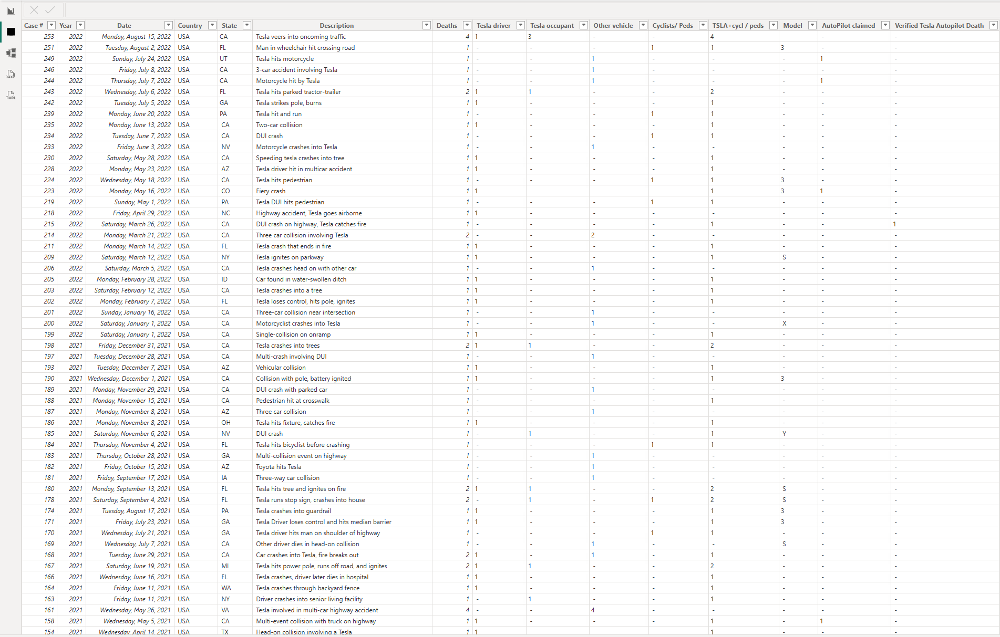
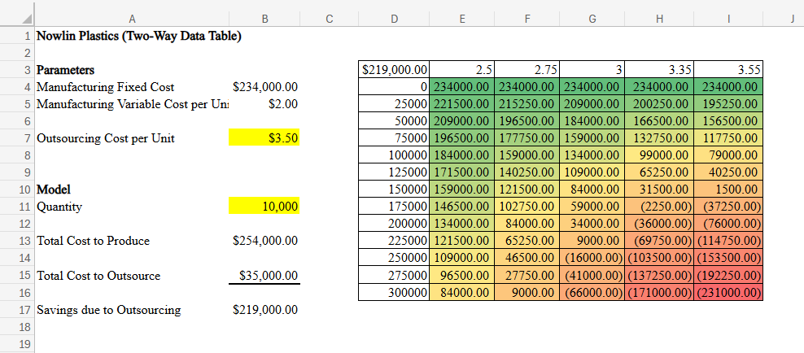
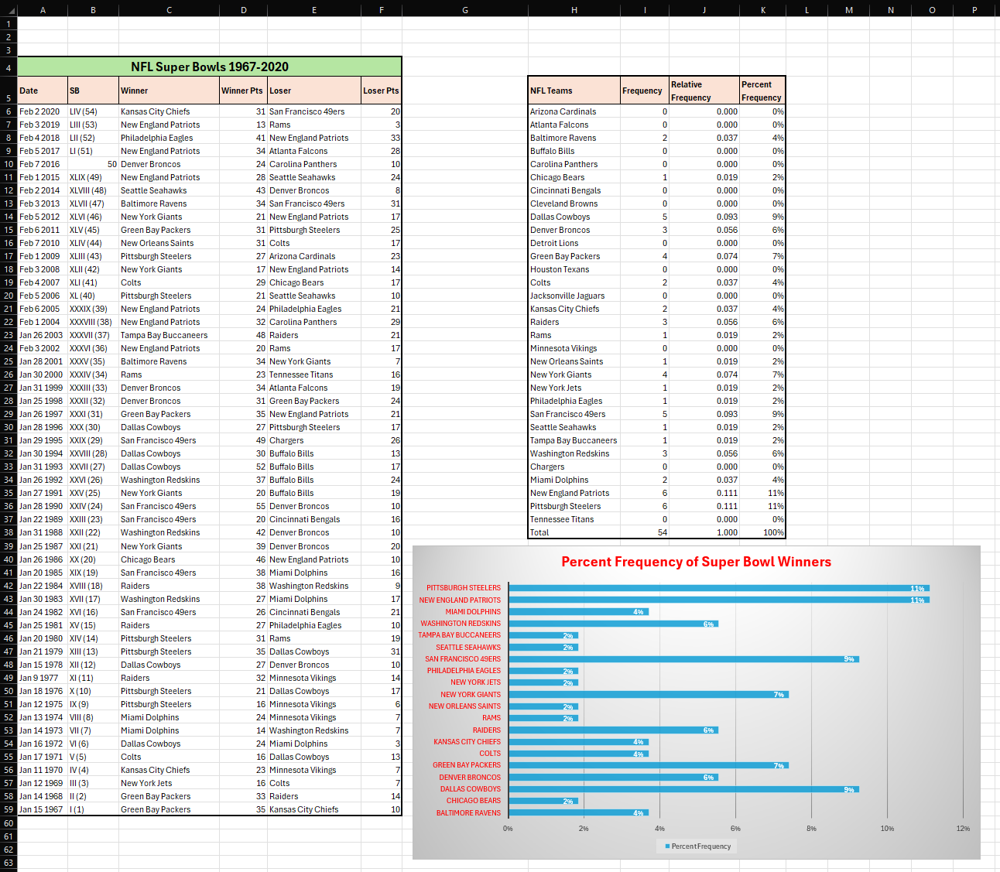
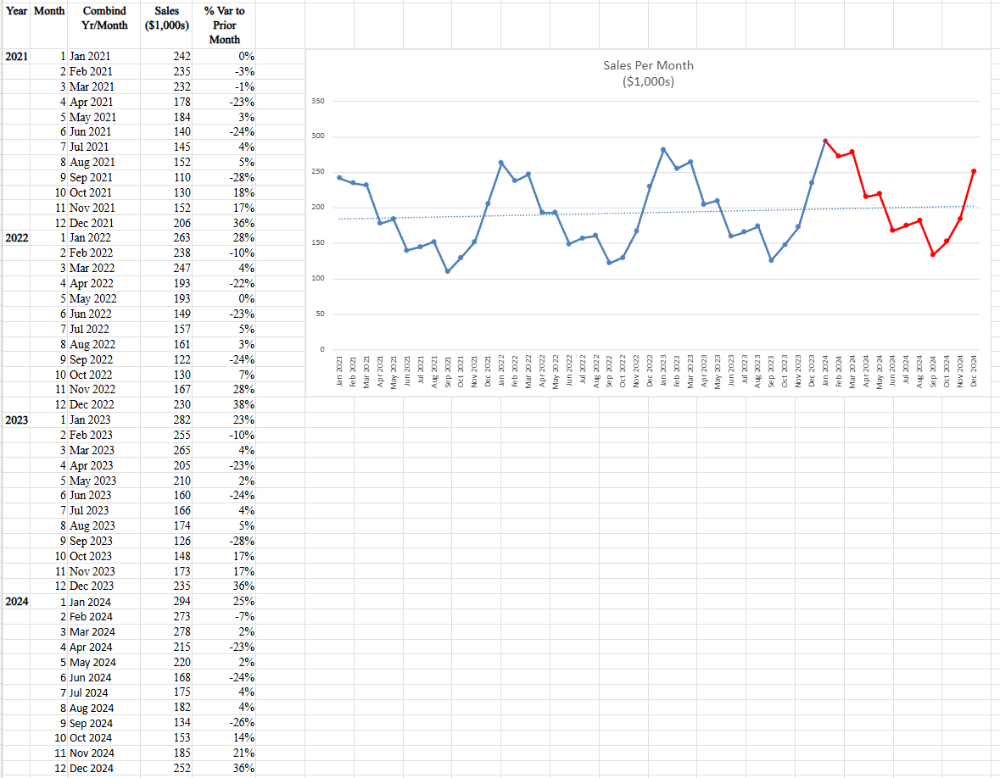

Course Overview
This course dives into the “why” behind business strategies. I learned to identify Key Performance Indicators (KPIs), perform What-If Analysis, and use Data Mining techniques to uncover hidden patterns. Throughout the course, I learned to perform descriptive, predictive, and prescriptive analyses. The focus is to transform raw data into meaningful business intelligence to drive organizational growth.
Skills Learned
- Analytical Frameworks: Developing a clear distinction between descriptive, predictive, and prescriptive analytics.
- Advanced Excel Modeling: Utilizing complex functions like INDEX/MATCH, Data Validation, and What-If Analysis.
- Data Mining: Applying core data mining concepts to solve business problems and ensure data accuracy.
- Dashboard Construction: Building dynamic data visualizations using PivotTables and PivotCharts.
- Strategic Recommendations: Summarize complex data into actionable business recommendations.
Content Covered
The Data Landscape
Comparing the roles of business analytics, business intelligence, and data science across various industries. This includes understanding how data-driven practices lead to business effectiveness.
Logical Construction
Mastering absolute, mixed, and relative referencing while linking complex assumptions across multiple worksheets to maintain model integrity.
Visualization Principles
Applying table design principles and exploring various visualization types.
Artifacts
Interactive Synthesis Dashboards
This Power BI dashboard demonstrates the synthesis of complex data into an interactive visual format.


Prescriptive What-If Analysis
A Two-Way Data Table that showcases prescriptive analysis. This model uses What-If analysis to forecast how changing variables impact overall savings.

Descriptive Data Distribution
An analysis demonstrating the application of descriptive analytics and distribution methods to effectively summarize a large dataset.

Time-Series Performance Tracking
A trend analysis that tracks and interprets business performance over a four-year period, identifying long-term growth patterns.

← Return to Academics